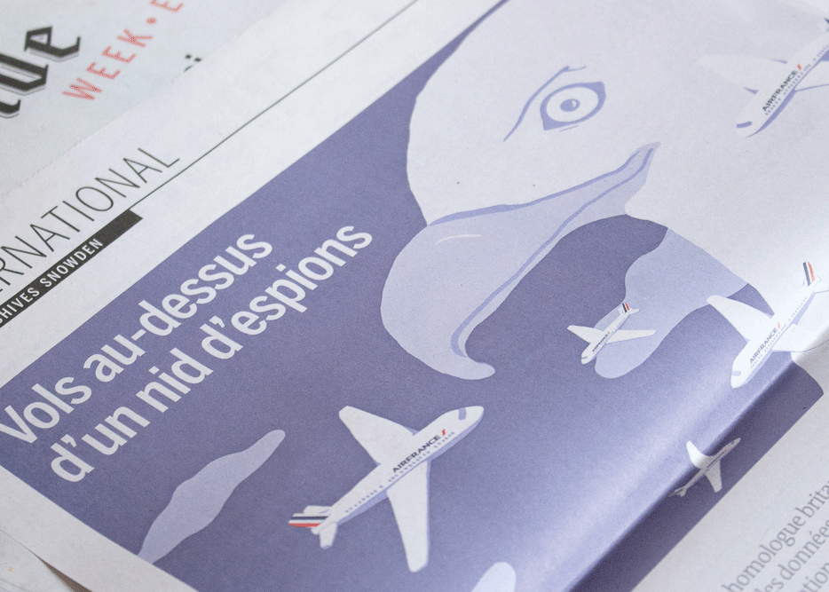

Snowden Revelations, Press Illustration,
Le Monde newspaper, 2016.
In 2016, Le Monde and
The Intercept redactions collaborated to
analyze the entire Snowden archive documents, and have extracted new revelations form it. This series of
illustrations accompanied the articles published by Le Monde following this collaboration.